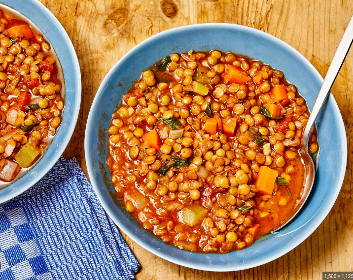
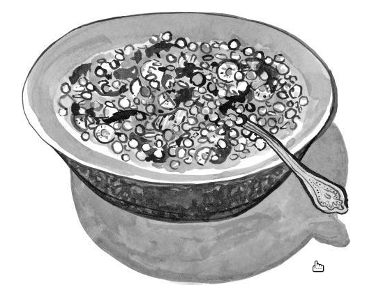

Lentil Soup

Description
Lentil soup is a soup made up of the lentils as the main ingredient. It can be either a vegetarian dish or include meat. It exist in many different cultures with many different versions spanning throughout Europe and the Middle east. This version is more of a mediterranean version.
Ingredients
- 1/4 cup of olive oil
- 1 onion, chopped
- 2 carrots, diced
- 2 stalks celery, chopped
- 2 cloves garlic, minced
- 1 bay leaf
- 1 teaspoon of dried oregano
- 1 teaspoon of dried basil
- 2 cup dry of lentils
- 8 cups of water
- 1(14.5 oz) can of crushed tomatoes
- 1/2 cup of spinach, rinsed and thinly sliced
Steps
- Heat oil in a large soup pot over medium heat. Add onions, carrots, and celery; cook and stir until onion is tender, 3 to 5 minutes
- Stir in garlic, bay leaf, oregano, and basil; cook for 2 minutes.
- Stir in lentils, and add water and tomatoes. Bring to a boil. Reduce heat and let simmer until lentils are tender, at least 1 hour.
- When ready to serve, stir in spinach and cook until it wilts.
- Stir in vinegar and season with salt and pepper; and adjust as needed.
